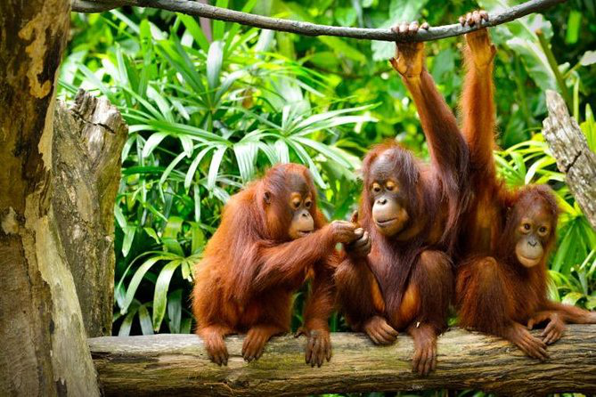

hello cruelii world

Species of Orangutan
Orangutans typically inhabit the majority of Sarawak's southern region. There are currently only a few orangutans in Sarawak, with the majority of them living in the Batang Ai National Park (BANP)–Lanjak Entimau Wildlife Sanctuary (LEWS) complex. The peat swamp forest of the Sedilu-Sebuyau and Gunung Lesong complex is home to a smaller population. Alfred Russell Wallace's samples and body measurements in 1855 marked the beginning of orangutan studies in Sarawak. Any significant attempts to save the species by listing it as protected under the Wild Life Protection Ordinance did not begin until 1958, more than a century later. In 1963, Bako National Park started rehabilitation efforts, but they were unsuccessful.
program for rehabilitation. In 1975, a coordinated restoration effort was implemented in Semenggoh.
Semenggoh's semi-wild orangutans are the outcome of a fruitful rehabilitation program.
Due to a successful rehabilitation operation, Semenggoh's semi-wild orangutan population was increasing by 1990.
The rehabilitation program was later transferred to Matang Wildlife Center in 1998 since Semenggoh was too small for further release. Future studies will concentrate on determining the genetic viability of current populations and identifying the resources needed to maintain orangutans in their natural environment, given the ongoing threats to these animals in the wild. The management authority can create and carry out planned conservation measures with the use of population estimates and updated threats to the species.
The largest ape in Asia is the orangutan (Pongo spp.). Given that fossil orangutans have been discovered in stone-age excavations from southern China to Borneo and Java, they once occupied a far wider range (Frey 1978). Only the islands of Sumatra and Borneo currently support the natural population, with an estimated6600 and 54,000 people, respectively (Wich et al. 2008).
The orangutans on the two islands were identified as distinct species more than ten years ago, specifically Pongo abelii in Sumatra and Pongo pygmaeus in Borneo (Zhi et al. 1996; Warren et al. 2000; Groves 2001). The three subspecies of Bornean orangutans are Pongo pygmaeus pygmaeus (found in Western Borneo), Pongo p. morio (found in Northern Borneo), and Pongo p. wurmbii (found in Southern Borneo) (Groves 2001). Orangutans are presently restricted to regions of appropriate habitat on the islands of Sumatra and Borneo, where their numbers have declined over the past few decades.